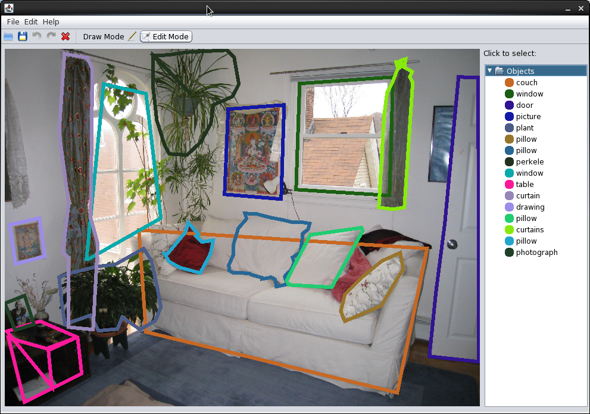
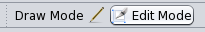
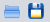
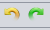
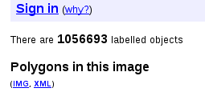

Image Labelling
Labelling instructions The following steps describe how to label an object:
1. Start by pressing the left
mouse button at some point along the boundary of the object.
|
Draw and Edit Modes
There are two modes, Draw Mode and Edit Mode. While in Draw Mode it is only possible to draw new shapes and name them, you must switch to Edit Mode in order to manipulate existing shapes. When in edit mode, you can click and drag on the highlighted corner points of shapes to move them. To select a different shape, either click on it in the right hand list, or click inside the shape. If there are several shapes overlapping then multiple clicks within the overlapping area will cycle through the overlapping shapes.
Saving and Loading
Images can be loaded by clicking the "Folder" button. Choose an image file, eg "image.jpg". Label sets are named as 'image.jpg.xml' and if one is present for the selected image it will be loaded automatically.
The save button will save the label set as a new file by the name "image.jpg.xml".
Renaming and Deleting
Renaming or deleting an object can be achieved by right clicking the name in the right hand list. When renaming is chosen a text input dialogue will be displayed requesting the new name. Choosing delete will remove the object for good, there is no confirmation dialogue.
Undo and Redo
While an object is being drawn, points on the polygon can be undone and redone by clicking the toolbar buttons, or by keyboard shortcuts (Ctrl+Z and Ctrl+Y). This facility allows mistakes to be corrected before completing the polygon.
Compatibility with Images and Annotations from the LabelMe website
Images from the LabelMe Website (http://labelme.csail.mit.edu/tool.html) can be imported into this application by using the two links on the website (named IMG and XML, as shown below).
To do this download and save the image using the "img" button and then download and save the XML file ("xml" button) but rename the XML file to match the image's filename + ".xml". For example, if the image file is "image.jpg" the XML file must be named "image.jpg.xml"
